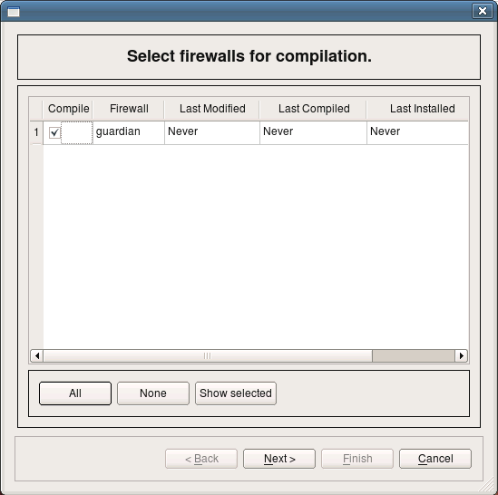
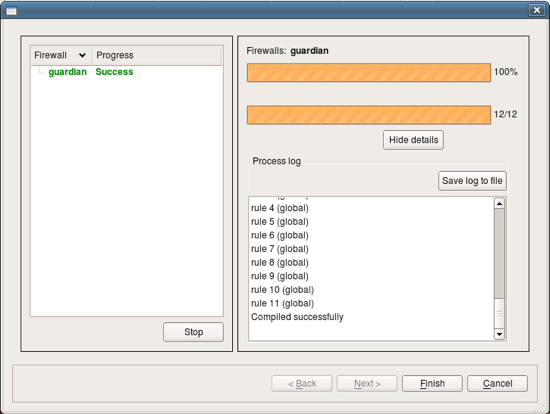
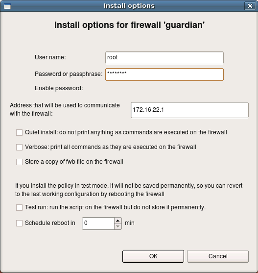

Now we should be ready to compile policy of the firewall guardian and generate iptables script. To do this, select firewall in the tree and click right mouse button. Choose item "Compile" in the pop-up menu. The dialog that appears lists all firewall objects defined in the objects tree and lets you select which ones should be compiled. The firewall guardian has just been created and has never been compiled and dialog shows that. Make sure checkbox next to the firewall object guardian is checked and click button "Next".
Firewall Builder calls policy compiler (which is by the way an external program which can be used on the command line). The next page of the dialog shows compiler progress and result.
Compiler generates iptables script in the file with the name the same as the name of the firewall object, with extension ".fw". The file is placed in the same directory where the data file .fwb is located.
$ ls -la test2.fwb guardian.fw -rwxr-xr-x 1 vadim vadim 11253 2009-02-16 16:41 guardian.fw -rw-r--r-- 1 vadim vadim 24696 2009-02-16 16:41 test2.fwb
Here is how generated script looks liie. This is just a fragment from the middle to show some generated iptables commands.
# ================ IPv4
# ================ Table 'filter', automatic rules
$IPTABLES -P OUTPUT DROP
$IPTABLES -P INPUT DROP
$IPTABLES -P FORWARD DROP
cat /proc/net/ip_tables_names | while read table; do
$IPTABLES -t $table -L -n | while read c chain rest; do
if test "X$c" = "XChain" ; then
$IPTABLES -t $table -F $chain
fi
done
$IPTABLES -t $table -X
done
$IPTABLES -A INPUT -m state --state ESTABLISHED,RELATED -j ACCEPT
$IPTABLES -A OUTPUT -m state --state ESTABLISHED,RELATED -j ACCEPT
$IPTABLES -A FORWARD -m state --state ESTABLISHED,RELATED -j ACCEPT
# ================ Table 'nat', rule set NAT
# NAT compiler errors and warnings:
#
#
# Rule 0 (NAT)
#
echo "Rule 0 (NAT)"
#
# no need to translate
# between DMZ and
# internal net
$IPTABLES -t nat -A POSTROUTING -s 192.168.2.0/24 -d 172.16.22.0/24 -j ACCEPT
$IPTABLES -t nat -A PREROUTING -s 192.168.2.0/24 -d 172.16.22.0/24 -j ACCEPT
#
Now you can transfer it to the firewall and execute it there to install iptables rules. However it is much more convenient to use built-in policy installer to do this. To use installer, click right mouse button on the firewall object in the tree and use menu item Install. Firewall Builder will compile the policy if necessary and then open dialog where you can configure parameters of the installer. Here you need to enter password to authenticate to the firewall. Once you click OK, installer will connect to the firewall using ssh client. First, it will copy generated script to the directory /etc on the firewall (or different one, if configured in the Installer tab of firewall settings dialog), then it will run this script and check for errors. Its progress will be visible in the panel of the installer wizard, just like the progress of policy compiler.
This guide walked you step by step through the process of creating of a firewall object, making some minor changes in its parameters and policy rules, compiling the policy and activating it on the firewall machine. This guide did not touch advanced topics such as built-in revision control system, working with multiple data files, working with multiple firewall objects, IPv6. You can find documentation and guides on these topics and more on our project web site at http://www.fwbuilder.org.
| Previous | Next |